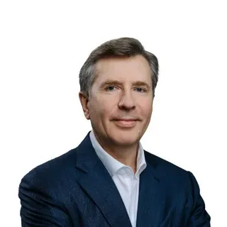
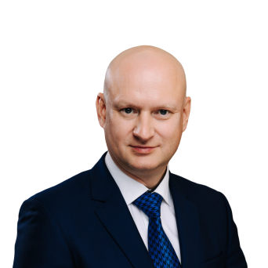

О компании Софтлайн
Софтлайн – ведущий поставщик IT-решений и сервисов.
Мы помогаем организациям цифровизовать свой бизнес.
Год основания: 1993
Направления деятельности
- Искусственный интеллект и разработка заказного и тиражного программного обеспечения. Компания разрабатывает инфраструктурное ПО: платформы управления IT- и облачной инфраструктурой (ITMan, CloudMaster, операционная система МСВСфера).
- Производство высокотехнологичного оборудования, включая компьютерные системы и лазерные технологии.
- Разработка решений в области информационной безопасности. Softline предоставляет услуги, которые помогают компаниям обеспечить соответствие своей деятельности требованиям законодательства, нормативных актов и внутренних политик в этой области.
- Реализация комплексных ИТ-проектов. Компания предлагает услуги по внедрению инфраструктурных проектов, начиная с поставки «железа» и заканчивая управлением эксплуатацией взаимосвязанных систем.
- Бизнес-консалтинг. Softline проводит консалтинг в области управления ИТ-процессами и сервисами в соответствии с лучшими практиками.
- Решения для госсектора. Цифровая трансформация региональных органов государственной власти, учреждений здравоохранения и образования — одно из приоритетных направлений Softline.
- Академия Softline. Компания оказывает услуги по развитию бизнеса и трансформации через подготовку квалифицированных кадров.
Наша история
- 1993 г. — в Москве была основана группа компаний ГК Softline (ПАО «Софтлайн»)
- 1993–1998 гг. — расширяется портфель поставщиков программного о беспечения.
- 2001 г. — был открыт первый офис за пределами России. В Минске, Беларусь, основан учебный центр ГК Softline (ПАО «Софтлайн»)
- 2004 г. — создание «Центра решений Microsoft» для развития сервисного бизнеса, развитие в новых странах (Казахстане и Узбекистане)
- 2006 г. — открыты офисы в Азербайджане и Таджикистане. Годовая выручка группы составляет примерно 100 миллионов долларов США.
Основатели
Игорь Павлович
Боровиков — основатель компании Softline.
Он основал её в 1993 году.

В 2019 году он присоединился к Softline
Group в качестве директора
Управления информационной безопасности, позже занял пост коммерческого
директора Softline в России.
С марта 2022 г. – генеральный директор Softline Россия

Артем отвечает за стратегическое
и операционное управление
финансами в Softline. Имеет более чем 20-летний опыт управления
финансами в крупных компаниях